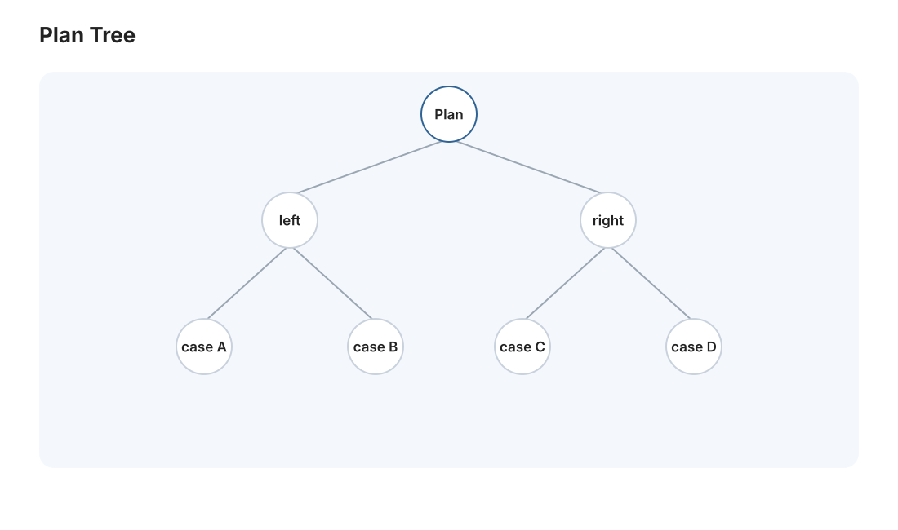
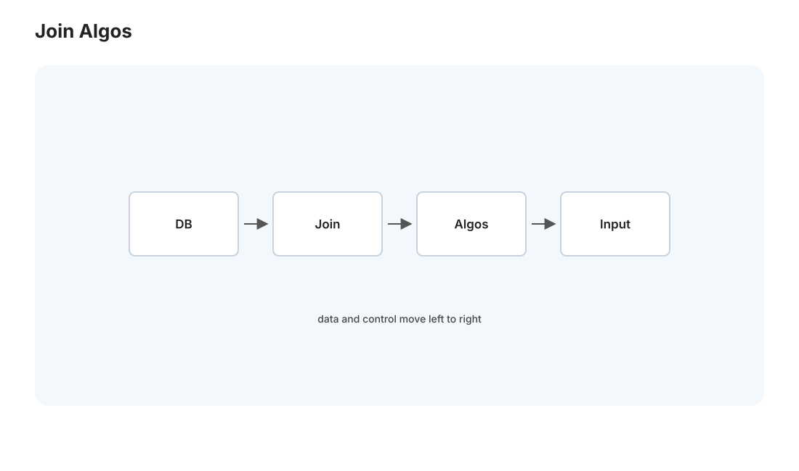
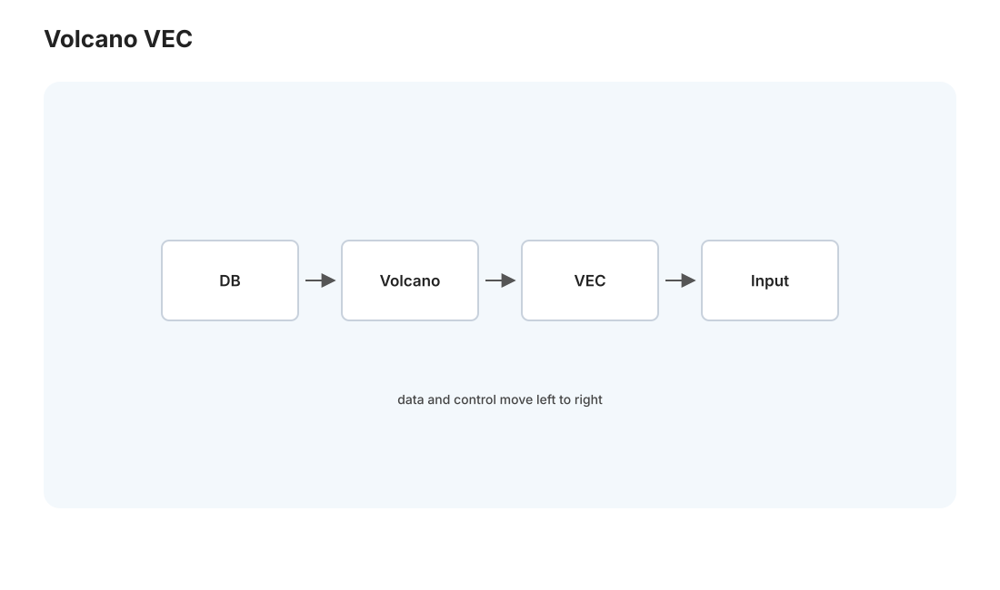

本页目录
数据库 II · 查询执行与优化
对标：CMU 15-445 中段 / Database Internals ｜ 前置：db-01、algo 线（连接算法就是排序/哈希） 你写一句
SELECT ... JOIN ... WHERE ... ORDER BY，数据库怎么把这段声明式的意图（说"要什么"而非"怎么做"）变成一个高效的执行计划？这一页揭开这层魔法：SQL → 关系代数 → 物理算子 → 优化器选路。理解它，你就能读懂EXPLAIN、写出快 SQL，也就懂了为什么同样结果的两句 SQL 能差几百倍。
1. 声明式的威力与代价

SQL 是声明式的——你说"我要 30 岁以上用户按注册时间排序"，不说"先扫哪张表、用哪个索引、怎么排序"。好处：你不用管执行细节，数据库自动优化；代价：你也控制不了执行细节，得信任（并学会引导）优化器。这层"意图与实现分离"正是关系数据库统治半世纪的原因——底层存储引擎升级、加了新索引，你的 SQL 不用改。
关系代数是 SQL 的数学骨架：选择 σ（WHERE）、投影 π（SELECT 列）、连接 ⋈（JOIN）、并/交/差、分组聚合。SQL 先被翻译成一棵关系代数表达式树，优化和执行都在这棵树上进行。
2. 物理算子：意图怎么落地

每个关系代数操作有多种物理实现，选哪个是性能关键。最重要的是 JOIN 的三种算法（🔗 直接是 algo 线的排序/哈希在数据库里的化身）：
| JOIN 算法 | 做法 | 何时最优 | 复杂度 |
|---|---|---|---|
| 嵌套循环 | 对左表每行扫右表 | 小表 或 内表有索引（index nested loop） | \(O(M\times N)\) / 有索引则 \(O(M\log N)\) |
| 排序归并 | 两表各排序后并行扫 | 输入已排序 或 需要有序输出 | \(O(M\log M + N\log N)\) |
| 哈希连接 | 小表建哈希表、大表探测 | 大表等值连接、无序 | \(O(M+N)\) |
理解这张表，你就能预测优化器的选择：等值连接大表用哈希、连接列有索引用索引嵌套循环、要排序输出顺便用归并。"同一个 JOIN 有三种实现、代价差数量级"是 SQL 性能的核心认知。
其它算子：排序（外部归并排序——数据比内存大时的经典算法，🔗 数据太大用磁盘的分治）、聚合（哈希聚合 / 排序聚合）、扫描（全表扫 vs 索引扫）。
3. 执行模型：数据怎么在算子间流动

执行计划是一棵算子树，数据自底向上流。两种执行模型：
- 火山模型（Volcano / 迭代器）：每个算子实现
next()，上层反复调下层拉一行——简单、经典，但每行一次虚函数调用开销大。 - 向量化执行：一次处理一批行（一列的一个 chunk）——摊薄函数调用、对缓存和 SIMD 友好（🔗 csapp-02、perf 线），现代分析型数据库（DuckDB、ClickHouse）的核心加速。这是"批处理摊薄开销"思想在数据库的体现，和 GPU 批处理、深度学习 batch 同源。
4. 查询优化器：选出快的那条路
同一个查询有指数多种执行计划（JOIN 顺序、算法、索引选择的组合）。优化器要在其中选最便宜的——这是数据库最精巧的部分：
- 基于规则：套用启发式（尽早做选择/投影缩小数据、下推谓词——"能少搬数据就少搬"）。
- 基于代价（CBO）：给每个候选计划估算代价（要读多少页、多少 CPU），选最小的。代价估算靠统计信息（表有多少行、列值分布直方图）。JOIN 顺序的选择用动态规划（System R 的经典算法，🔗 你在算法线见过的 DP）在指数空间里找近优解。
- 优化器的阿喀琉斯之踵——基数估计：它靠统计信息猜每一步的中间结果有多少行，猜错就选错计划。这是真实世界慢查询的头号原因："优化器以为只有 100 行、实际 100 万行，选了嵌套循环，灾难"。解法：
ANALYZE更新统计、必要时用 hint 或改写 SQL 引导。
这就是为什么要读 EXPLAIN ANALYZE：它显示优化器估计的行数 vs 实际的行数——两者差很大的地方，就是优化器猜错、性能出问题的地方。这是数据库调优最高频的实战技能。
5. 写快 SQL 的原则（Medusa 可用）
- 只取需要的：
SELECT 具体列而非SELECT *（少搬数据、可能走覆盖索引）；用LIMIT。 - 让 WHERE 能用索引：别在索引列上套函数（
WHERE date(ts)=...使索引失效，改成范围WHERE ts >= ... AND ts < ...）——这个坑 Medusa 的时间查询要特别注意。 - JOIN 的连接列建索引（外键索引）。
- 警惕 N+1：循环里发 N 条查询，改成一条 JOIN 或
IN（🔗 web-02 ORM 的经典陷阱）。 - 分页用 keyset 而非大 OFFSET：
OFFSET 100000要扫弃前十万行，改用WHERE id > last_id。
6. 练习与要点
例 1（JOIN 算法选择） 给"大表 A ⋈ 小表 B（等值、B 无序）"和"两个已排序大表连接"，各选最优 JOIN 算法并说理由——把第 2 节的表用到具体场景。
例 2（读估计误差） 找一个 Medusa 慢查询的 EXPLAIN ANALYZE，对比某个 JOIN/扫描节点的 rows 估计值与 actual rows——差一个数量级的地方就是病灶。这是本页最实用的一招。
例 3（改写救索引） 把 WHERE EXTRACT(year FROM published_at) = 2026 改写成 WHERE published_at >= '2026-01-01' AND published_at < '2027-01-01'——前者索引失效全表扫、后者走索引，亲手验证加速。\(\blacksquare\)
📋 大 Project P02（第二阶段）· 查询执行
P02-B · SQL 子集与执行计划（承接 P02-A）：
- 学习目标：理解 SQL 如何变成关系代数、物理算子树与可执行迭代器；学习用测试定义 SQL 语义。
- 教师提供：SQL 子集语法、AST 类型、TPC-H 风格小数据集、golden result 文件、
EXPLAIN输出格式样例。- 学生任务：① 解析
SELECT ... FROM ... WHERE ... JOIN ... GROUP BY ... ORDER BY ... LIMIT的核心子集；② 实现 Volcano 算子：SeqScan / IndexScan / Filter / Project / Sort / NestedLoopJoin / HashJoin / Aggregate；③ 实现规则优化器：谓词下推、投影裁剪、索引选择、简单 join 顺序启发式。- 语义约束：NULL 可先不做，但必须在 README 说明；聚合至少支持
COUNT/SUM/MIN/MAX；所有算子要能流式next()，不得把任意大表无脑读进内存。- 验收测试：20 条公开 SQL + 20 条隐藏 SQL 结果一致；
EXPLAIN能打印逻辑计划和物理计划；索引选择查询相对 SeqScan 有可测加速；HashJoin 在大表等值连接上快于嵌套循环。- 评分重点：解析与语义 25%，算子正确性 40%，优化器 20%，
EXPLAIN/调试体验 15%。- 延伸挑战：加入统计信息和一个小型 CBO，用估计行数选择 join 顺序。
下一页：数据库 III——事务、MVCC 与恢复：ACID 怎么实现，多个事务并发怎么不互相污染，崩溃了怎么恢复。